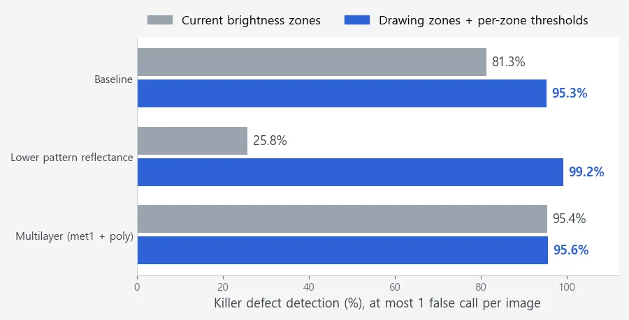
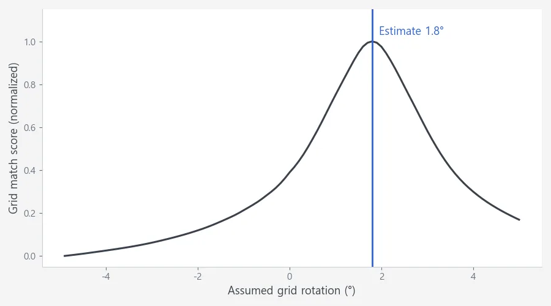
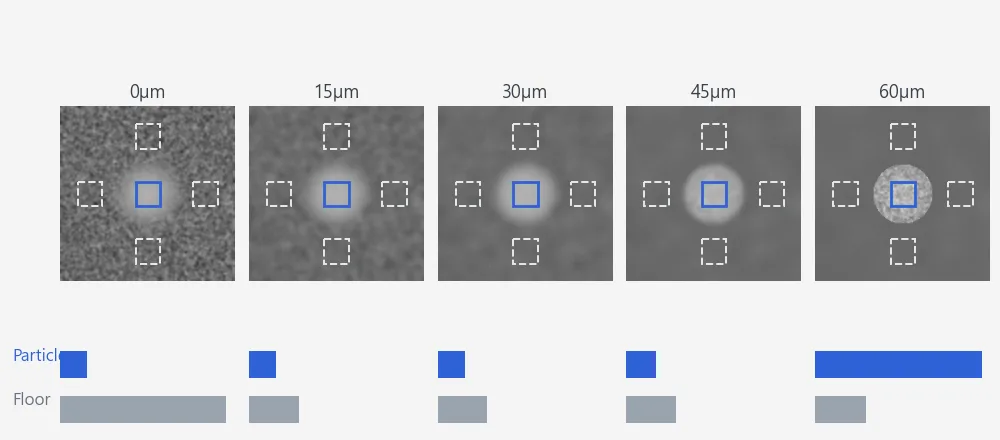
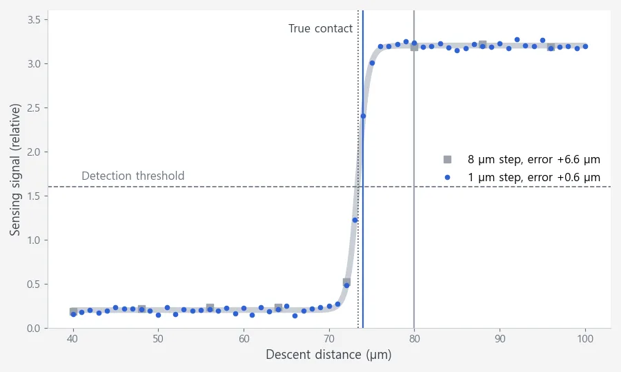

Which layers of the equipment software I owned, and which decisions the results fed into.
C# (WPF, WinForms). Inspection status screens, recipe creation and deployment tools, labeling and training tools, a TB-scale image splitter. Unified RAC tool, training tool
Automatic capture, focus, and align sequences; axis interference, vacuum, and light-level interlocks. New tool SW, tip breakage interlock
Draw only the latest frame, lock image buffer reads and writes, keep UI updates on the main thread queue, and process tiles in parallel to keep memory flat. frame backlog, program crashes, design converter
Results that fed decisions
Evidence for purchase decisions
Repeatability evaluations of 7 infrared optics samples supported ordering the replacement optics, and the glass wafer evaluation led to a new tool order.
On a brand-new tool with no reference code, I cleared every SW item in the functional test and it passed third-party certification, with 0 failures over 11 days (264 hours) of operation.
Design conversion passed production validation on production material, and crack detection passed all 4 evaluation conditions for stacked memory. Stage tilt was brought within the customer limit.
Setup and on-site support on production lines of two Korean memory makers. For the new tool: 32 site visits and 25 days on site. Wrote 8 customer-facing documents, including an operation plan, a user manual, and a production switch plan.
The weekly report tool is used by a team of 10, and the release pack builder was rolled out to a group of about 30. Optics and material evaluations were done by a team of four.
The first Align beat the customer criteria over thousands of production runs, but I found it sometimes gave a wrong angle a high score on low-contrast images. I redesigned it so wrong answers score low, and reported the longer compute time (150 → 700 ms) as well.
I made image AF 72% faster, but on a blank floor no sharpness peak appeared. Instead of polishing the image method further, I redesigned it around contact sensing.
An evaluation set split by file-name hash scored better than reality. Frames from the same day had leaked into both training and evaluation, so I switched to a split by date. The CNN’s detection gain was not significant, and I reported it that way.
The repeat-run program measuring the race reproduction rate had a bug, so the first numbers were inflated. I fixed the measurement program first, then measured again.
Code for every figure: tools/make_figures.py. It rebuilds each figure from synthetic data and checks its result with asserts.
Apps you can use
Tools I built to cut repetitive work on equipment software, released so anyone can use them on their own data. Data stays on the user’s device, and every app follows the same field procedure: reproduce, compare, shadow, then switch with rollback. The apps have Korean and English screens. All app measurements are on synthetic data.
Built from the view of someone who made recipes and maps: check that the map definition is right before looking at defects.
Solves
Opens KLARF files on any PC, not just the tool PC, with wafer map, overlay and two-file compare. Opens one million defects in under 3 seconds.
Different
Reads both KLARF 1.2 and 1.8 locally in the browser with no install. On open it checks five map-definition items such as pitch, scribe and origin die, and lets you view an estimated fix.
Shows which tool differs from the baseline and what changed when, from recipe files alone, with no SECS/GEM or MES link.
Solves
Reads JSON, INI, XML, CSV and key=value into one parameter tree, diffs with tolerance and units, and gives a pass or block with reasons before a run.
Different
Tool-by-version board, one-tool pilot then full rollout bundle, and rollback bundle on one screen. Runs in the browser from files only, with no server or agent.
Finds, before deploying to the tool, the one slightly slow stage that fills the queue and memory hours later.
Solves
Simulates per-stage processing time, workers, queue size and overflow policy, and reports p99 latency, dropped frames and the queue size needed for zero loss.
Different
Uses the same overflow policies as camera SDKs as the built-in model, so you only fill in fields. Replays your own timing log and computes when memory will hit its limit.
Cuts the time it takes to find what broke first in tens of thousands of log lines after a tool goes down.
Solves
Groups alarms into occurrences, finds warnings that repeat before them with lead-time statistics, and cites the evidence line numbers.
Different
For each labeled down case, it recomputes how many minutes earlier a warning rule would have caught it. Works on a single file with no collection server.
C# equipment software runs for weeks on a tool PC, so many downs only show up over time. Finds the code shapes that actually caused downs, before commit.
Solves
Checks 11 rules through a NuGet analyzer in the build and a no-build CLI, and shows the evidence line, how the tool stalls and how to fix it in a browser report.
Different
Nine rules for patterns that only show up in long runs, such as 32-bit TickCount comparisons that wrap after 24.9 days and timer callback reentrancy, each with a reproduction test.
Recommends models per field within the subscriptions you pay for, and shows why the top pick changed. Source
Next app: alignment mark detection comparison (rules vs CNN, leakage from how the evaluation set is split)
How I work with AI
I set the design and the pass criteria
I write down first what to build, what counts as correct, and how to check it.
I implement with AI coding tools
I use AI coding tools such as Claude Code and Cursor to write and tidy code, and keep the working instructions in the repository so the same criteria carry over.
Tests decide what ships
I keep only what passes unit tests, self-checks, and value-by-value comparison of Python and C++ results.
Rules filter model output
The demos above check every LLM result against rules, and fall back to the rule-based result when numbers or evidence appear that are not in the input.
Career
Engineer on the SW team of the corporate R&D center at a semiconductor inspection equipment company, joined January 2022. Setup and on-site support on production lines of two Korean memory makers. 7+ tool types supported, 80 tasks, 8 customer-facing documents (as of H1 2026)
Featureless Align, alignment mark detection, recipe auto-creation from design data, crack detection, preventing tip breakage, unified RAC tool
New particle-removal tool SW setup and on-site stabilization, particle-height Auto Focus, 3D inspection stage tilt correction, infrared optics evaluation
2D/3D inspection tool vision setup and tact time reduction, data backup tool, result editing features
Defect coordinate matching algorithm and review reports, reference data integration across tools, tool data backup and disk management, inspection module voltage interlock, 2D/3D inspection tool setup from December
Joined (work-study program). Inspection status screen, defect statistics analysis, capture-area brightness interlock, automatic deletion of old inspection data
Education
Inha University, Graduate School of Manufacturing InnovationM.S. in Semiconductor Process Intelligence Convergence, part-time program for working engineers (Mar 2026 to Feb 2028, expected)
Tech University of Korea, Computer and Electronic EngineeringWork-study program (Mar 2022 to Feb 2026, graduated), GPA 3.9 / 4.5, academic excellence scholarship, C# (WPF) personal project presentation
Seoul Robotics High SchoolMeister vocational high school (Mar 2019 to Feb 2022)
Certifications
Work-Study Qualification, SW Development Level 5Dec 2025
ADsP, Advanced Data Analytics Semi-ProfessionalSep 2025
Craftsman certificates in Electronics, Electricity, and ProgrammingKorean national technical qualifications
Training
Eight major semiconductor fabrication processes2022
Semiconductor domainWafer Align (θ, XY), die-to-die inspection, recipes, bump and stacked-memory inspection, repeatability (RNR), MTBI and uptime, Klarf output
Master’s research and what comes next
I took the limits I hit at work and made them my research topic. Inha University, Graduate School of Manufacturing Innovation, Semiconductor Process Intelligence Convergence, Mar 2026 to Feb 2028
The limit I saw at workRule-based logic needs a person to retune inspection settings every time the product or process changes.
Groundwork: RAC and Shot Key AlignRAC (Recipe Auto Creation) converts design data (GDS) into inspection images, builds the recipe, then sets illumination, focus, and alignment automatically. Shot Key Align learns the mark-detection tolerances people used to tune from labeled field images, and a CNN covers keys the rules miss. Inspection thresholds still come from presets set by people.
Research topicBuilding inspection zones and per-zone inspection settings automatically from the design drawing, verified by how closely they match zones drawn by people and whether detection stays the same.
NextDefine problems in numbers, solve them in ways that can be verified, and build equipment SW that does not need constant manual tuning.

Preliminary experiment: public SKY130 design, simulated imaging, vertical 4-die comparison. Detection of short and open defects with false calls held at 1 or fewer per image. The baseline gap is +14.0 pp (95% interval +12.0 to +15.9). The cost: inspected area grows from 22% to 39%, and a 1 px alignment error roughly doubles false calls. The current method gets close on the baseline when its thresholds are lowered, and falls behind when conditions change. No company data was used.
What RAC automates, and the step the research adds
Shot Key Align learns mark-detection tolerances from field labels, CNN backup, regression gate
Research plan, in order
NowVerify alignment-mark decisions with data: generate candidates, pick by score, compare with people, then apply.
NextGenerate inspection zones from the drawing, judged by agreement with zones drawn by people and by generation time.
ThenExtend to inspection settings for automatic recipe creation: success rate, time vs. manual, equal detection.
LastCompare before and after deployment and write the thesis. Graduation expected Feb 2028.
Publication order: alignment-mark decisions to a domestic conference and a KCI journal, then drawing-based generation to an SCI journal, each after company approval.
Contact
Questions and feedback on the projects, technical notes, and public apps are welcome by email.
In-house validated · production switch pending 2026 · needed to unify RAC across all sites · algorithm design, experiments, C++ implementation, field validation
Wafer Align without registered features
Grid estimated on a synthetic die array (1.8° rotation, column fixed-pattern noise)
False passes (synthetic and in-house images)
134 → 0
Max angle error
0.0013°
Rotated wafers, 100 runs
Fail 0
1No registration, and reject its own wrong answers
Matching features registered by people cost registration effort for every recipe and still left failures. The first version met the customer criteria over thousands of production runs, but on low-contrast images it sometimes gave a wrong angle a high score.
2Fit a grid to the die-array period

Grid match score measured while sweeping the assumed angle. It peaks at the true angle. Synthetic image
I reproduced the failure on synthetic images and narrowed the cause to the camera’s fixed-pattern noise. The method fits a grid to the die-array period and scores consistency across many points, so a wrong answer scores low.
3Port to C++ and validate
Validated in Python, ported to C++, and matched the results value by value for each condition. Wafers with no pattern are filtered first by a majority vote on center-region variance, skipping unnecessary align.
False passes 134 → 0 (vs. the previous method, synthetic and in-house images combined)
±0.1 to 1° rotated wafers, 100 runs, 0 fails, max error 0.0013° (previous method residual after correction about 0.02°)
4Open items
Compute time went from 150 ms to about 700 ms, still within production takt. Regions with too few visible dies are rejected by design, and validation for the production switch is in progress.
C++, Python, OpenCV
Source: internal evaluation records (H1 2026)
In production 2025 to 2026 · vision, sequence, UI, interlocks, camera control
New particle-removal tool SW
If drawing is even slightly slower than capture, drawing every frame in order makes the queue grow without end. Synthetic simulation
264h0 failures over 11 days (264 hours) of operation, Vision uptime 98.86% including 3 h of planned stops
Availability (432 h basis)
99.31%
Memory (10 shears)
18 → 12GB
Camera usage time
−55%
Timeline
New project to turn a manual machine semi-automatic; I owned vision, sequence, and UI
Finished the manual shear sequence before the deadline. Average shear time 126 s → 94 s, success rate 96.7% → over 98%
Semi-auto upgrade and reliability work, 32 site visits
On site for 25 days (Nov 14 to Dec 10), reproducing, fixing, and revalidating the halts within 48 hours
The day after a tip breakage, fixed the interlock criteria; no recurrence since (details)
Maintenance and development work continues
1A new tool with no reference code
This new tool turned a manual machine into a semi-automatic one, so there was no reference code and the delivery date was fixed. After it entered production the program kept halting within 48 hours, so I stayed on site for 25 days, repeating reproduction, log analysis, fixes, and revalidation.
2Stop frames from piling up
During continuous capture the display fell behind and frames piled up. Drawing only the latest frame and limiting concurrent processing to one removed it. I also moved to 64-bit and added camera reconnection.
20 slots in a row with 0 freezes, memory from 18 GB to 12 GB
3Measure stops in numbers
Detected crashes and forced exits so MTBI, MTBF, and availability are computed from logs automatically. Cleared every SW item among the 9 functional test findings and passed third-party certification.
4Rebuild the interlocks
I rebuilt the interlocks: lifter homing method, vacuum state monitoring, wafer presence recheck. Malfunctions over the next 23 slots: 0.
C# (WinForms), OpenCV
Source: internal evaluation records (H2 2025), field setup records
Field validated 2025 · new particle-removal tool, design and field validation
Particle-height Auto Focus, from images to contact sensing

Raise the focus and measure sharpness of the particle (blue box) and the floor in four directions (dashed) together. The height gap between the two peaks is the particle height. Synthetic image
Image AF time
−72%
Height repeatability (20 runs)
±2µm
Shear height accuracy
±1µm
1Faster image AF, and its limit
On a weakly textured floor the sharpness curve is flat, so its peak cannot be trusted. Synthetic floor image
Checking the floor one direction at a time became a simultaneous check of all directions, cutting AF time from 90 s to 25 s (−72%). But with a weakly textured floor, or no image change after a shear, the height could not be told apart.
2Redesign around contact sensing

The finer the descent step, the closer the threshold crossing is to the real contact. Synthetic signal
Detect the floor and the particle top each by a voltage threshold, with a finer descent step.
For small particles under 200 µm, the sensing reference point moves to the particle center so the floor can still be found.
If empty air is mistaken for the floor, it reads again; if the height is out of range, the shear is blocked.
After a tip breakage, vacuum control was added to every floor-sensing sequence.
3Field validation
No height-measured samples were available on site, so I validated by per-particle repeatability. Particles of 300 µm and up, 20 repeats: ±2µm; shear height for 50 to 100 µm: ±1µm; continuous production material and multiple shears normal.
C#, motion control, DAQ, OpenCV
Source: internal evaluation records (H2 2025)
Rules field validated · CNN in shadow 2026 · detection algorithm, training tool, CNN training and ONNX deployment, shadow judgment tool
Shot Key Align, rules + CNN
Rule detections (solid) and a faint mark missed by score (dashed); bottom right is the correlation map. Synthetic image
Align time
−84%
False detections (with CNN, 280 → 114)
−59%
Field slot detection
12/12
Inference p95 latency
−58%
1Slow, and re-registered at every site
Template-based align was slow and needed marks re-registered at every new site. Rule parameters did not fit every image, causing false detections.
2Find marks by rules, without templates
Detected die-level rule marks without templates and cut the capture range from 7 lines to about 3. Align time 140 s → 23 s (−84%), 12/12 slots detected on site.
3Learn parameters from field images
Built a tool that learns the rule-detection tolerances people used to tune from labeled field images, and exports them as the profile file the tool reads. Import, auto-label and review, train and evaluate, and deploy all happen on one screen.
At first I split training and evaluation by file-name hash, but near-identical frames from the same day landed on both sides and scores looked better than reality. I switched to a fixed evaluation set split by date.
If detections drop or false detections rise on the same evaluation set, the new model is not deployed (regression gate).
Labels are reviewed first on images where models disagree, so the same number of labels teaches more. Detection was higher than when picking the same number at random.
Implemented a HOG + logistic regression verifier that rechecks rule results, in C# with no external library, and set its threshold in the empty gap between the score distributions of true and false detections.
4A CNN that fits the tool’s inference engine
Replaced the heatmap CNN’s upsampling with ConvTranspose, which the tool’s older inference engine can read, and exported it to ONNX. Checked that C# inference matches Python. Instead of shrinking the model, parallel execution cut inference p95 latency by about 58%.
5CNN runs in shadow mode first
The CNN verifies rule results and replaces them with its own position when they fail. It is not switched on directly but runs in shadow mode, with staged rollout and instant rollback planned.
Internal evaluation: the CNN kept detections while cutting false detections from 280 to 114 (59%); the detection gain was not statistically significant, and I reported it that way.
Offline evaluation in the training tool with a date split: the combined policy brought both the rule-only misses (about 2.6%) and false detections on mark-free images (about 5.1%) to 0. This is on in-house images, the evaluation labels lean toward the rules, and it has not been applied in the field yet.
C#, C++, OpenCV, PyTorch, ONNX, HOG
Source: internal evaluation records (H1 2026), training tool documentation
Passed production validation 2026 · conversion and masking algorithms, auto sequence, UI, user manual
Each recipe took hours of manual teaching. Converting drawings to images distorted fine circular patterns and shifted their positions.
2Restore shape and position together
Replaced min pooling with coordinate snapping, oversampling, box resampling, and thresholding (figure above). Verified against reference images with VIAs and bumps of several sizes; on production material (fine VIAs and bumps) position and shape matched, and it passed production validation.
3Large areas: only where needed
Processing only actual layer regions with parallel tiles cut large-area conversion from 314 s to 42 s. Bitmaps of hundreds of MB that could not be loaded are now read by parsing the header directly.
4Placing 250,000 bumps automatically
Placed about 250,000 bumps with 4-point perspective correction, and later layers inherit the first layer’s correction. Bump recipe authoring went from 4 hours to 20 minutes. I am continuing this topic as master’s research (setting region-wise inspection thresholds from drawing features).
5Bringing scattered RAC together
Built a unified tool that combines the recipe-creation environments each site ran separately, and implemented a GDS Editor for drawing-to-BMP conversion and auto masking. Rollout to all sites is planned. Wrote 4 customer-facing documents, including the RAC operating plan, a user manual, and the Featureless Align production transition plan. The unified tool’s deployment and stability are covered separately.
C# (WPF), C++, Python
Source: internal evaluation records (H1 2026)
Passed customer evaluation 2026 · algorithm and analysis tools, end to end
Die-edge crack detection
Edge inspection band (blue), excluded region (hatched), and the detected crack (synthetic image)
Newly found (524 of 1,883 defects)
28%
Images to split
TB-scale per wafer
1Edges that were missed or over-detected
The existing die-to-die comparison missed or over-detected edge cracks on stacked memory dies. TB-scale images could not even be opened on a regular PC.
2Detection in five stages
Split into five stages (edge search, adaptive mask, defect detection, size filter, interlock), with edge band width and brightness as parameters. Found 524 new defects out of 1,883 total, and passed all 4 evaluation conditions for stacked memory (real rate up to 92.6%, above the customer criterion).
3A tool to open TB-scale images
Built a standalone program that tiles the image and opens only the needed region, with per-channel saving. Also built a tool that aggregates 7 customer-required align metrics from logs into Excel.
C++, C# (WPF), OpenCV
Source: internal evaluation records (H1 2026)
In-house validated · field validation planned 2026 · design and implementation
Unifying scattered recipe management tools
The tool and the server use a shared folder as a message channel.
Problem
Recipe management was split across three tools, so checking versions, editing, deploying, and restoring meant moving between tools.
Approach
Moved the version store and history, batch editing, deployment, restore, baseline registration, and pre-inspection version checks into one tool.
Built a new server program and used a shared folder as a message channel, handling requests and results idempotently. Only transient errors are retried, and files are written under a temp name, then renamed.
Result
Built-in self-check modes (38 items on the tool side, 11 on the server) and 19 integration test items. Field validation on the tool is planned.
C# (WPF), Client/Server
Source: development plan document (Nov 2026)
In-house validated · before tool deployment 2026 · design and implementation end to end (creation tool, tool deployment, drawing converter) · the unified tool of inspection recipe auto-creation
Unified RAC tool, deployment and stability
On restart, if the tool’s first message arrives before the processing loop is ready, it is dropped and everything stalls. The fix starts receiving only after the loop is ready. Synthetic simulation
Repeated starts, 200
0 stalls
Unit tests
41 → 54
Problem
We needed a tool that builds an inspection recipe in one go from the wafer map and layer information, and deploys it to many tools.
The new tool had not shipped yet, so the output format, naming rules, and map validation criteria had to match the tool-side implementation.
Converting large design drawings into inspection masks risked running out of memory and disk.
Approach
Built a WPF (MVVM) tool that creates recipes semi- or fully automatically from the map and a layer matching table.
Deploys to many tools over text TCP. It reassembles messages that arrive split at their boundaries, bounds response waits, keeps a separate processing slot per tool, and handles the same tool reconnecting.
Converting drawings (GDS, OASIS) into masks, it renders in bands in parallel so memory stays bounded. Before converting it checks output size and free disk space, and writes to a temp file before renaming. A compatibility mode produces the same pixels as the old Python converter.
Before shipping, I compared against the tool-side source so map validation and naming rules matched the tool exactly.
Result
Fixed a startup race in the processing loop that stalled about 1 in 4 restarts, and guarded against regressions with a 200-repeat startup test.
The repeat-run program measuring the reproduction rate also had a bug, so the first numbers were inflated. I fixed the measurement program first, then measured again.
Unit tests went from 41 passed and 1 skipped to all 54 passing. Settings that would produce oversized output are rejected immediately without writing anything.
C# (WPF, MVVM), TCP, GDSII/OASIS, xUnit
Source: development documents and test records (2026)
In production 2022-2024
Tool data backup and disk management
Backup time for 3.5 GB, 4,373 files (evaluation records)
Backup time (3.5 GB, 4,373 files)
25 min → 4 min 20 s
2022 Added automatic deletion of inspection result data to ease HDD capacity problems.
2023 Built a backup program that moves old tool data, with background running, a tray icon, and automatic reboot. Also built a program that deletes data when capacity is exceeded.
2024 Copying and log screen updates were tied in one flow; splitting them asynchronously cut 25 minutes to 4 min 20 s. Without the log screen it finishes in 2 seconds.
Source: internal evaluation records (2022 to 2024)
In production 2026
Large inspection result transfer
Inspection result transfer time (evaluation records)
1.2 GB transfer
29 s
4 GB transfer
65 s
Replaced basic FTP requests with a dedicated library and reordered the flow to create folders before uploading.
Worked around errors from changed server write permissions with a separate script, and wrote a user manual.
Source: internal evaluation records (H1 2026)
In production 2023 · review program algorithm and reports
Defect coordinate matching and review reports
The principle, reproduced with synthetic coordinates. With a position offset between tools, matching by position alone pairs neighbors (left); adding size finds the right pairs (right).
In mask matching, which pairs mask defect data with inspection defects, I fixed the algorithm whose size matching broke under position error, and kept improving the feature afterwards.
Fixed unmatched defects showing up without position info, and added the total match count and defect brightness (GV).
Changed the review screen, coordinate format, and horizontal and vertical Excel reports across 4 customer requests. After inspection, coordinates can be converted to the customer format with an optional Y-axis flip.
Source: internal evaluation records (2023)
Used in-house 2026 · in-house tool, design and implementation · the public demo is a rebuild on synthetic data
Weekly report automation (in-house)
The public app. It rebuilds the in-house tool’s flow so anyone can run it on their own git log.
People using it now
10
Planned rollout
50
Problem
Every week, writing the report meant rereading the week’s commits and notes and copying them by hand into the company PPT template.
Approach
Rules group the week’s git commits by topic; each topic gets a title and a three-line summary in the template PPT.
Summaries come only from a local LLM, so no data leaves the machine.
Every summary is checked: three lines, 80 characters per line, and no numbers or status words such as “done” that are not in the input. On failure it retries once, then falls back to rule-based sentences.
It also runs as a Claude Code command.
Result
10 people on the team use it, with a rollout to 50 planned.
You can run the same flow on your own git log in the public app.
For tool patches, this report feeds the release pack builder, which makes the release documents and the patch folder from it.
Python, python-pptx, local LLM (Ollama), Claude Code
Source: in-house tool usage (Nov 2026)
Used in-house 2026 · in-house tool, design and implementation · the next step after weekly report automation
Release pack builder for tool patches (in-house)
Flow drawn with made-up names. The code that draws it checks that the patch folder holds as many files as were changed, and that deleted files never go into the folder.
Rolled out to
about 30
Outputs in one run
3
Problem
For every tool patch I copied the same content three times: into the weekly report, the release report and the release note.
I copied the code to bring on site by hand, following the commit list and the folder structure.
A missing slide, a wrong version or date, or a missing file means another secure transfer once it is found on site.
Approach
No new template: the previous report and note are the template. The version is proposed as the previous one plus one, the note gets one row in the format of its last row, and only the version and date change in the file name. Formats that differed by author now follow the previous output.
Pick the tool section and slides in the weekly report and they move into the report body. Slides move between different pptx files at the XML level, with image and hyperlink relations reconnected.
The patch files come from the checked commits. Only changed files are copied, under a per-commit folder with their repository paths, and deleted files go into a separate list to remove on site.
Built for transfer into a secure area: it ships only the executable, the needed libraries and the source, and makes no network access.
Layout names, placeholder numbers and item lists that differ by tool or version live in a settings file, so a new format needs no code change.
Result
Rebuilding the next patch from the outputs of the previous one gave the same overview, note and slide layout as the real outputs made by hand.
On the real repository, applying the patch folder over the code from the last transfer gave files identical to the target commit, and it built. Picking only some commits can mix an earlier commit's change into the same file and break the build, so the tool now warns before it makes the folder.
Rolled out to about 30 people in the group.
Charts and videos are not moved yet (a warning is logged), and slide notes are not copied.
Source: in-house tool documentation and user manual (Nov 2026)
2026
Fixing pattern-match score misjudgment
The principle, reproduced with a synthetic pattern. Normalizing the score map by its own min and max gives even a rotated wafer 100 points.
Traced why a 90°-rotated wafer passed as normal: normalization distorted the score distribution.
Redesigned the min and max score formulas for each matching mode, so abnormal cases score 10 to 50 instead of a fixed 100.
Separately documented a decision strategy for low-pattern images that mixes phase correlation (3 to 5 times faster) with other scores.
Source: internal evaluation records (H1 2026)
In production 2025
Better wafer edge circle detection
Left: the old parameters catch the high-contrast inner grid circle (dashed). Right: the fixed parameters catch the outer edge (solid). OpenCV HoughCircles on a synthetic image
Fixed unstable wafer edge circle detection caused by grid patterns, noise, and stitching seams.
Increased blur from 9×9 to 31×31, switched the fixed Canny threshold (50 to 255) to an Otsu-based one, and tuned the radius range and accumulator resolution. Wafer center misjudgments and retries from Hough failures went down.
Source: internal evaluation records (H2 2025)
In production 2026
Tracing a defect count change to interpolation
Part of the same synthetic image downscaled with coordinate rounding (left) and truncation (right), then detected with the same threshold. Overall 228 vs. 215
Traced why the defect count on the same material dropped by 2.8%, and found that image interpolation had changed from rounding to truncation.
Restored rounding and recovered the original results.
Source: internal evaluation records (H1 2026)
Implemented · tool validation planned 2026
Per-channel R, G, B auto illumination
Using the same light level on all three channels shifts the color. A per-channel binary search measures all three channels in each shot and converges within 9 shots. Synthetic scene
Changed auto illumination from matching a single light to matching each channel.
One capture measures all three channel brightnesses; a binary search drives each channel’s median brightness to its target.
Also fixed the mono-color detection, search oscillation, and light lower-limit bugs. Validation on the tool is planned.
Source: internal work records (Nov 2026)
In production 2026
Fixing program crashes during repeatability tests
Reading while another thread writes without a lock (left) returns a buffer mixing two frames. With a lock (right), you get one frame. The principle, reproduced with synthetic images
Locked image buffer reads and writes, and changed async void to async Task. UI updates are pinned to the main-thread queue. 0 recurrences after the patch.
On another tool, I found that 3 of 4 vision crashes were window-message deadlocks and fixed them.
Source: internal evaluation records (H1 2026)
In production 2026
Interlock against tip breakage
Moving XY and Z together passes through the interference zone. The interlock forces Z up first, then XY. Concept diagram
Corrected the interlock criterion from the XY axes to the Z axis, and added per-axis interference checks, stop confirmation, and a block on simultaneous XY and Z moves.
Ran the lifter servo motor 1,000 times to confirm position repeatability.
0 recurrences since, production lots running normally.
Source: internal evaluation records (H1 2026), servo repeat-run records
In production 2022-2026
Light, brightness, and voltage interlocks
Compares the reference and current images block by block, and blocks inspection when the deviation exceeds the limit. Synthetic image
2022 to 2023 Added an interlock that blocks TDI capture when a set region’s brightness (GV) is out of range, and an inspection module voltage interlock.
2026 Compares a bright reference image with the current one and blocks inspection when the light level drifts. Mean deviation 0.52% over 100 repeats; a limit was set to prevent misjudgments.
Source: internal evaluation records (2022 to 2023, H1 2026)
H1 2025 Cut bugs from 468 to 312 with SonarQube and fixed 40+ memory leaks.
H2 2025 Cut static analysis warnings on another tool from 298 to 106 (second pass 154 → 106). Removing risky code such as 32-bit time functions and forced thread termination brought program crashes down to at most one every two weeks.
Source: internal evaluation records (2025)
In production 2023-2025
2D/3D inspection tool vision setup
Driving Z by interpolating heights measured at each Y position reduces the stage tilt. Synthetic height map
Error by position
±4 → ±1µm
Stage Tilt
10 → 6µm
Built line-scan and 3D sensor capture sequences and height-interpolated variable focus.
Tact time took 7 min 12 s even without inspection, over the 6-minute target; with 2D and 3D inspection included it now takes 6 min 5 s.
2025 On another 3D tool, YZ-interpolated motion from stage height data cut tilt from 10 µm to 6 µm, within the customer limit.
Source: internal evaluation records (H1 2024, H1 2025)
Evaluation complete 2025-2026
New optics and material detectability evaluation
New optics evaluation results (evaluation records)
Finished repeatability evaluations of 7 infrared samples within a week and reported them; the results supported ordering the replacement optics.
Visibility 14/15 and detectability 10/10 on new high-resolution samples.
Four of us evaluated the glass wafers in 2 days, which led to a new tool order.
Source: internal evaluation records (H1 2025 and others)


 Better wafer edge circle detection
Better wafer edge circle detection Tracing an interpolation change
Tracing an interpolation change